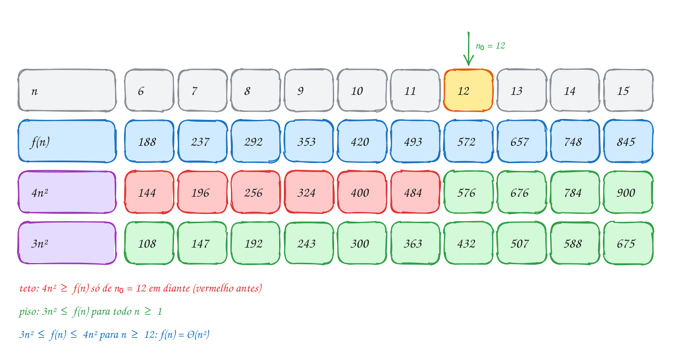
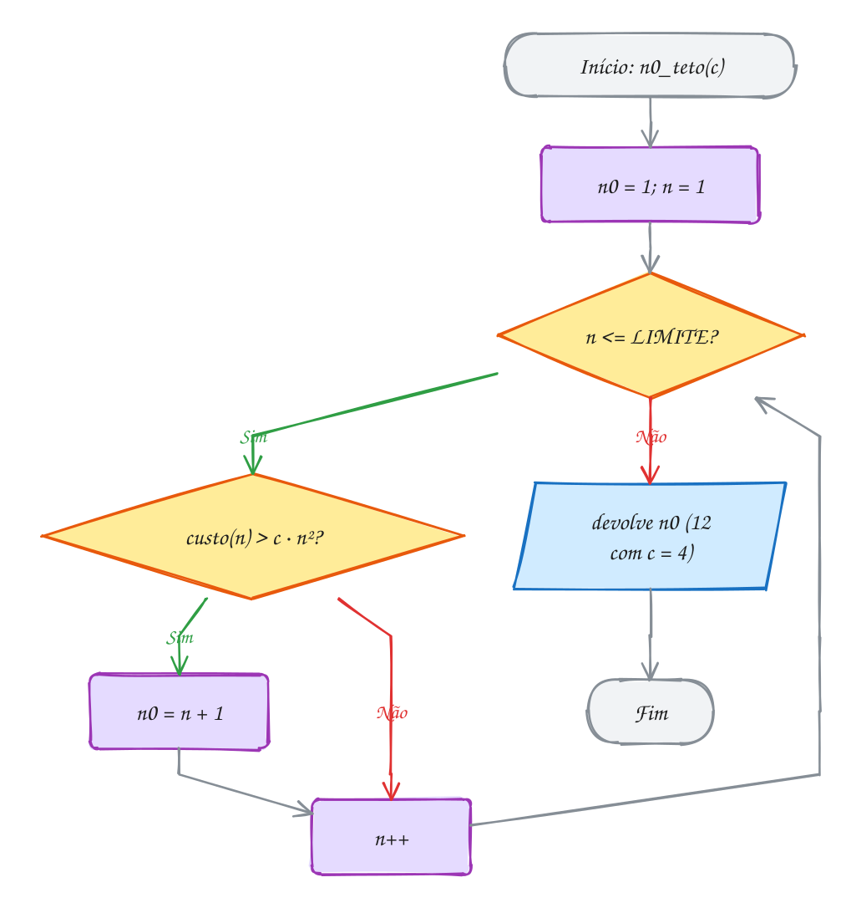
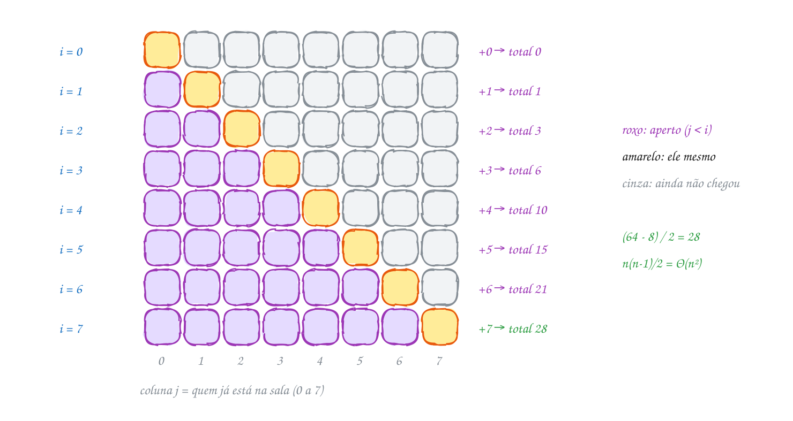
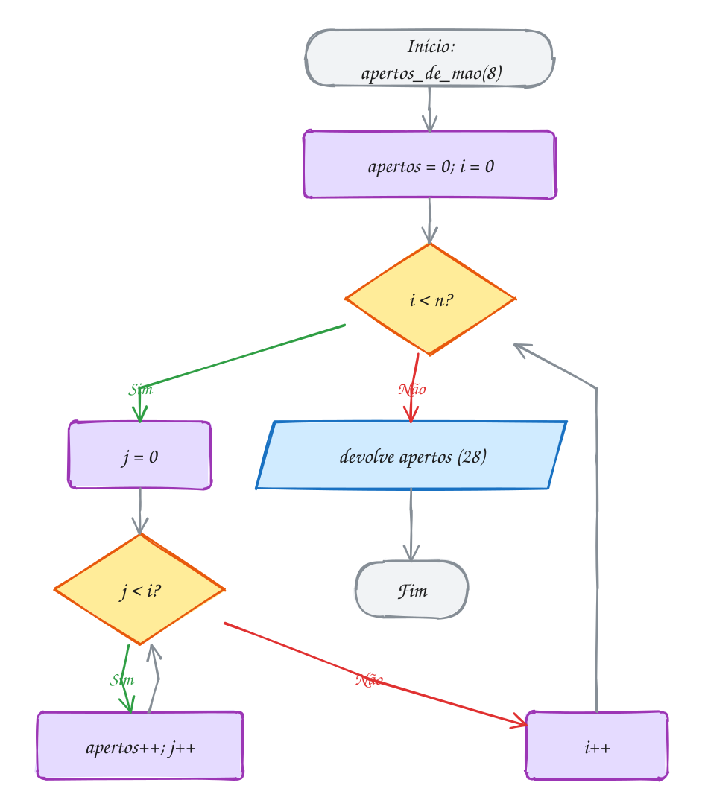
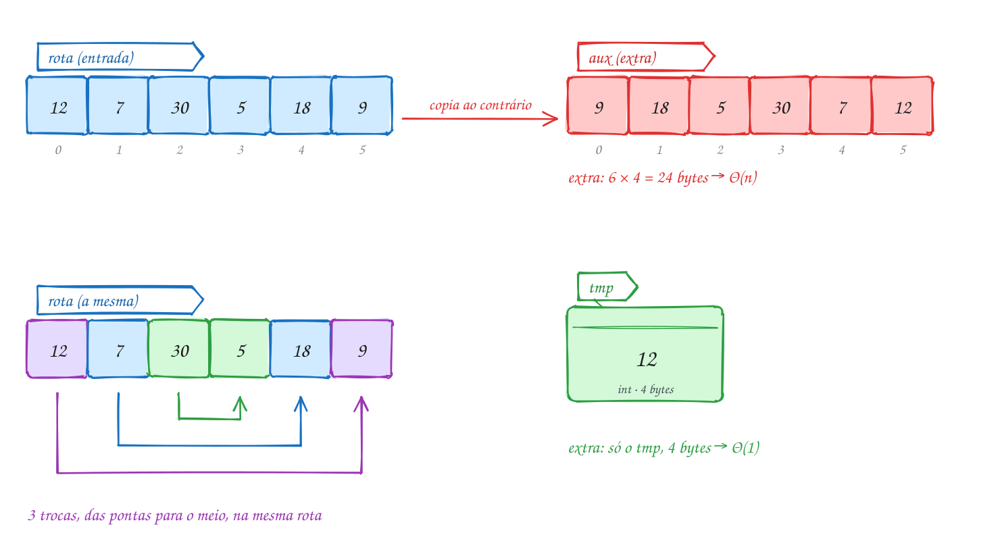
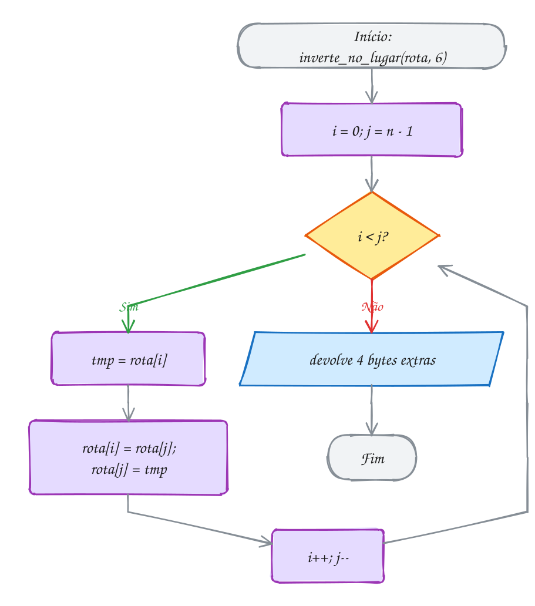
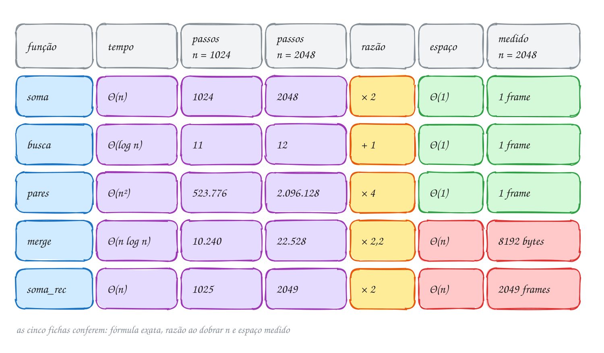
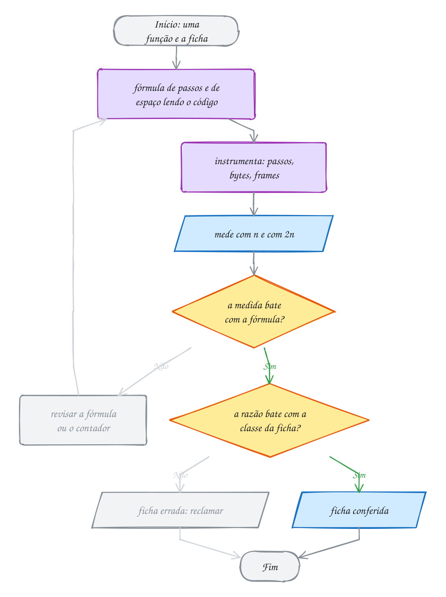

[!IMPORTANT] Mundo 3 · Custo e estruturas lineares · Rota do jogo: etapa 12 de 29 · módulo bônus ★
Missão: provar custos com O, Ω, Θ e somatórios.
Vem de: Módulo 10 · Pensar como cientista da computação. Segue para: Módulo 11 · Listas.
Checkpoints desta fase:
- Ler os assuntos 0166 a 0169 e refazer os exemplos
- Resolver os 4 exercícios de cada assunto, escrevendo o código sozinho
- Fechar a lista prática (P2601 a P2630)
- Enfrentar os desafios do módulo
- Chefão: resolver as questões de prova do módulo sem consultar
Definições formais de O, Ω e Θ (com c e n₀), somatórios que contam
laços e complexidade espacial. Depende dos módulos 10 (eficiência e notação O)
e 17 (recorrências).
c e n₀; provar e
refutar um limitec e n₀ com um programa e por que ele não substitui a provaRevise contagem de passos e notação O (0071, 0072), pilha de chamadas e
recursão (0031 a 0033), malloc e free (0053, 0054), merge sort (0094) e
recorrências (0114 a 0117).
Faça as contas no papel antes de rodar; depois dobre o n e veja se o
contador acompanha a fórmula. Nos diagramas, verde é o que vale, vermelho o que
falha ou cresce com n, amarelo a virada (o n₀) e roxo o trabalho contado.
log₂ n é quantas vezes dá para dividir n por 2 até chegar em 1; ln n é o
logaritmo natural (log em <math.h>).
O último assunto tem um TAD, custo.h e custo.c, compilado junto com os
exemplos da pasta: não use custo_passos, custo_bytes e custo_prof_max
como nomes de variáveis suas.
| # | Assunto |
|---|---|
| 0166 | O, Ω e Θ de verdade |
| 0167 | Somatórios que saem de laços |
| 0168 | Complexidade espacial |
| 0169 | Juntando tudo: passos e bytes conferidos |
[!NOTE] Cada assunto é um capítulo: Conceito (a explicação), Exemplos de uso (programas que compilam sozinhos: rode com o comando abaixo de cada um e compare com a saída no fim do código) e Exercícios (cada um é um arquivo em
material/com o esqueleto, as dicas e o espaço para a resposta; resoluções em_respostas/26-analise-formal/).
Até aqui, dizer que um algoritmo é O(n²) queria dizer, sem muito rigor, que
o custo "cresce como n²". A prova do mestrado cobra mais: cobra a definição
com constantes, e cobra que você saiba provar e refutar uma afirmação como
"3n² + 10n + 20 é O(n)". A seguir vêm as três notações no papel, do
jeito que o Cormen as define.
Pense no contrato do sistema de caixa de um mercadinho. Ele diz: "o
fechamento com n vendas faz no máximo 4n² operações, a partir de 12
vendas". Você contou as operações e chegou a f(n) = 3n² + 10n + 20. Com 10
vendas, são 420 operações contra um limite de 400. O contrato foi quebrado?
Não, porque ele só promete a partir de 12 vendas. As notações funcionam
assim, com duas constantes: um fator c que multiplica a função de
referência e um ponto de partida n₀ a partir do qual a promessa vale.
A primeira notação é o teto. Dizemos que f(n) é O(g(n)) se existem
constantes c > 0 e n₀ tais que f(n) ≤ c · g(n) para todo n ≥ n₀
(CORMEN et al., 2024, cap. 3). Em palavras: depois de certo ponto, f nunca
passa de um múltiplo fixo de g. O contrato do caixa afirma que o custo é
O(n²), com c = 4 e n₀ = 12.
A segunda é o piso, a mesma ideia virada ao contrário. f(n) é
Ω(g(n)) (lê-se "ômega de g") se existem c > 0 e n₀ tais que
f(n) ≥ c · g(n) para todo n ≥ n₀ (CORMEN et al., 2024, cap. 3). Depois
de certo ponto, f nunca fica abaixo de um múltiplo fixo de g.
A terceira junta as duas. f(n) é Θ(g(n)) (lê-se "teta de g") se é O e
Ω ao mesmo tempo: existem c₁, c₂ e n₀ com
c₁ · g(n) ≤ f(n) ≤ c₂ · g(n) para todo n ≥ n₀ (ZIVIANI, 2010, cap. 1).
É um sanduíche: f fica presa entre dois múltiplos de g, e por isso
Θ diz que as duas funções crescem no mesmo ritmo.
Por que as duas constantes? O n₀ existe porque só interessa o
comportamento para n grande; para n pequeno, termos como 10n e 20
ainda pesam e atrapalham. O c existe porque a constante depende da
máquina e do compilador, e a notação quer falar do algoritmo. Nenhum dos
dois é único: se c = 4 e n₀ = 12 servem, c = 5 com o mesmo n₀
também serve (LINTZMAYER; MOTA, 2023).
Provar que f é O(g) é exibir um par c, n₀ e mostrar a conta. Para
o teto com c = 4, a desigualdade 3n² + 10n + 20 ≤ 4n² vira
n² - 10n - 20 ≥ 0. A raiz positiva de n² - 10n - 20 é 11,7, então a
desigualdade vale para todo n ≥ 12. Para o piso com c = 3, a
desigualdade 3n² + 10n + 20 ≥ 3n² vale para todo n ≥ 1. Logo f(n) é
Θ(n²), com c₁ = 3, c₂ = 4 e n₀ = 12.
Refutar é mostrar que nenhum par serve, o que é bem diferente de
não achar um. f(n) é O(n)? Seria preciso 3n² + 10n + 20 ≤ c · n.
Dividindo tudo por n, isso vira 3n + 10 + 20/n ≤ c. Só que o lado
esquerdo cresce sem limite: para qualquer c que alguém proponha, basta
tomar n > c/3 e a desigualdade quebra. Então não existe c, e f não é
O(n) (FEOFILOFF, s.d.).
Há outro eixo, independente das notações: qual entrada você está
olhando. Para o mesmo n, o melhor caso é a entrada que dá menos
trabalho, o pior caso a que dá mais, e o caso médio é a média sobre
todas as entradas, segundo alguma distribuição de probabilidade
(SZWARCFITER; MARKENZON, 2010, cap. 1). Cada caso é uma função de n
diferente, e cada uma tem o seu O, Ω ou Θ. Na busca sequencial, o melhor
caso é Θ(1), achar no primeiro, e o pior é Θ(n), não achar.
Ao testar uma desigualdade num programa, cuidado com o tamanho das contas:
3 * n * n com int estoura perto de n = 26.755, e estouro de inteiro
com sinal é comportamento indefinido. Por isso o exemplo usa long.
| Notação | Desigualdade (para n ≥ n₀) |
Papel |
|---|---|---|
| O(g) | f(n) ≤ c · g(n) |
teto |
| Ω(g) | f(n) ≥ c · g(n) |
piso |
| Θ(g) | c₁ · g(n) ≤ f(n) ≤ c₂ · g(n) |
sanduíche |
[!WARNING] O, Ω e Θ não são "pior, melhor e médio": são teto, piso e sanduíche, e valem para qualquer caso. "A busca sequencial é Ω(n)" é falsa, pois o melhor caso faz 1 comparação. E testar até 100 mil não prova nada além disso: só acha candidatos. A prova é a conta
n² - 10n - 20 ≥ 0.
O fechamento de um caixa custa f(n) = 3n² + 10n + 20 passos. O teto 4n²
fica abaixo até n = 11 e acima de 12 em diante; o n₀ é a primeira coluna
verde:

#include <stdio.h>
#define LIMITE 100000
// passos medidos no fechamento do caixa com n vendas
long custo(long n) {
return 3 * n * n + 10 * n + 20;
}
// O: menor n0 com custo(n) <= c * n² para todo n de n0 até LIMITE
long n0_teto(double c) {
long n0 = 1;
for (long n = 1; n <= LIMITE; n++) {
if (custo(n) > c * n * n) {
n0 = n + 1; // falhou aqui: n0 tem que vir depois
}
}
return n0;
}
// Ω: menor n0 com custo(n) >= c * n² para todo n de n0 até LIMITE
long n0_piso(double c) {
long n0 = 1;
for (long n = 1; n <= LIMITE; n++) {
if (custo(n) < c * n * n) {
n0 = n + 1;
}
}
return n0;
}
int main(void) {
printf(" n custo(n) 4n²\n");
for (long n = 10; n <= 14; n++) {
printf("%2ld %10ld %5ld\n", n, custo(n), 4 * n * n);
}
double tetos[] = {4.0, 3.5, 3.0};
for (int i = 0; i < 3; i++) {
long n0 = n0_teto(tetos[i]);
if (n0 > LIMITE) {
printf("O(n²) com c = %.1f: nenhum n0 até %d\n", tetos[i], LIMITE);
} else {
printf("O(n²) com c = %.1f: n0 = %ld\n", tetos[i], n0);
}
}
printf("Ω(n²) com c = 3.0: n0 = %ld\n", n0_piso(3.0));
// refutar O(n): para cada c, o custo passa de c·n e não volta mais
long cs[] = {10, 100, 1000};
for (int i = 0; i < 3; i++) {
long ultimo_ok = 0;
for (long n = 1; n <= LIMITE; n++) {
if (custo(n) <= cs[i] * n) {
ultimo_ok = n;
}
}
printf("O(n) com c = %4ld: falha de n = %ld em diante\n", cs[i], ultimo_ok + 1);
}
return 0;
}
// Saída:
// n custo(n) 4n²
// 10 420 400
// 11 493 484
// 12 572 576
// 13 657 676
// 14 748 784
// O(n²) com c = 4.0: n0 = 12
// O(n²) com c = 3.5: n0 = 22
// O(n²) com c = 3.0: nenhum n0 até 100000
// Ω(n²) com c = 3.0: n0 = 1
// O(n) com c = 10: falha de n = 1 em diante
// O(n) com c = 100: falha de n = 30 em diante
// O(n) com c = 1000: falha de n = 330 em diante
A função n0_teto empurra o n₀ para depois de cada falha; com c = 1000, o
teto linear aguenta até 329 e quebra para sempre:

Exemplo A331 · Melhor, pior e médio na busca sequencial
#include <stdio.h>
int comparacoes = 0;
// procura a placa no pátio, da vaga 0 em diante
int busca(const int placas[], int n, int placa) {
for (int i = 0; i < n; i++) {
comparacoes++;
if (placas[i] == placa) {
return i;
}
}
return -1;
}
// melhor, pior e média de comparações procurando cada placa que está no pátio
void tres_casos(const int placas[], int n) {
int menor = n + 1, maior = 0;
long soma = 0;
for (int alvo = 0; alvo < n; alvo++) {
comparacoes = 0;
busca(placas, n, placas[alvo]);
if (comparacoes < menor) menor = comparacoes;
if (comparacoes > maior) maior = comparacoes;
soma += comparacoes;
}
comparacoes = 0;
busca(placas, n, -1); // placa que não está no pátio
printf("n = %4d | melhor %d | pior %4d | média %7.1f | ausente %4d\n",
n, menor, maior, (double)soma / n, comparacoes);
}
int main(void) {
static int patio[1000];
for (int i = 0; i < 1000; i++) {
patio[i] = 1000 + 7 * i; // placas fictícias, todas diferentes
}
tres_casos(patio, 10);
tres_casos(patio, 100);
tres_casos(patio, 1000);
return 0;
}
// Saída:
// n = 10 | melhor 1 | pior 10 | média 5.5 | ausente 10
// n = 100 | melhor 1 | pior 100 | média 50.5 | ausente 100
// n = 1000 | melhor 1 | pior 1000 | média 500.5 | ausente 1000
gcc ~/LPEDC/material/A331.c -o ~/LPEDC/material/A331 && ~/LPEDC/material/A331
Exemplo A332 · Constante ou não: olhando a razão
#include <stdio.h>
#include <math.h>
// Se a razão f(n) / g(n) fica abaixo de um número fixo quando n cresce,
// esse número serve de c: f = O(g). Se a razão cresce sem parar, nenhum c
// serve: f não é O(g).
int main(void) {
printf(" n 2^(n+1)/2^n 4^n/2^n\n");
for (int n = 10; n <= 50; n += 10) {
double r1 = pow(2, n + 1) / pow(2, n); // sempre 2
double r2 = pow(4, n) / pow(2, n); // é 2^n: explode
printf("%2d %12.0f %8.2e\n", n, r1, r2);
}
printf("\n n log(n²)/log n n²/(100n) (n log n)/n\n");
for (long n = 10; n <= 1000000; n *= 10) {
double r3 = log2((double)n * n) / log2((double)n); // sempre 2
double r4 = (double)n * n / (100.0 * n); // n/100
double r5 = n * log2((double)n) / n; // log n
printf("%7ld %13.1f %10.1f %12.1f\n", n, r3, r4, r5);
}
// 2^(n+1) = O(2^n) com c = 2 e log(n²) = Θ(log n) com c = 2.
// 4^n não é O(2^n), n² não é O(100n) e n log n não é O(n):
// as três razões passam de qualquer c que você escolher.
return 0;
}
// Saída:
// n 2^(n+1)/2^n 4^n/2^n
// 10 2 1.02e+03
// 20 2 1.05e+06
// 30 2 1.07e+09
// 40 2 1.10e+12
// 50 2 1.13e+15
//
// n log(n²)/log n n²/(100n) (n log n)/n
// 10 2.0 0.1 3.3
// 100 2.0 1.0 6.6
// 1000 2.0 10.0 10.0
// 10000 2.0 100.0 13.3
// 100000 2.0 1000.0 16.6
// 1000000 2.0 10000.0 19.9
gcc ~/LPEDC/material/A332.c -o ~/LPEDC/material/A332 -lm && ~/LPEDC/material/A332
Exercício E991 · ★☆☆
O sistema do condomínio gera os boletos de n condôminos com f(n) = 5n + 40 passos. Prove, com um programa, que f(n) é O(n): escreva a função custo(n) e uma função acha_n0(c) que testa todo n de 1 até 10000 e devolve o menor n0 a partir do qual custo(n) <= c * n sempre vale. Mostre o n0 para c = 6, 7, 10 e 45:
Saída esperada:
c = 6: n0 = 40
c = 7: n0 = 20
c = 10: n0 = 8
c = 45: n0 = 1
Exercício E993 · ★★☆
Melhor, pior e caso médio de verdade, sem fórmula: para cada n de 3 a 7, gere TODAS as ordens dos números 1..n (são n! ordens), ordene uma cópia de cada uma com o insertion sort e conte as comparações entre elementos. Mostre quantas ordens foram testadas, o menor, o maior e a média de comparações:
Saída esperada:
n = 3: 6 ordens | melhor 2 | pior 3 | média 2.67
n = 4: 24 ordens | melhor 3 | pior 6 | média 4.92
n = 5: 120 ordens | melhor 4 | pior 10 | média 7.72
n = 6: 720 ordens | melhor 5 | pior 15 | média 11.05
n = 7: 5040 ordens | melhor 6 | pior 21 | média 14.91
Exercício E994 · ★★☆
Refute com um programa: n log₂ n NÃO é O(n). Para cada c em 2, 4, 8 e 16, ache o último n de 1 até 200000 em que n * log2(n) <= c * n, e mostre a partir de onde a desigualdade quebra de vez:
Saída esperada:
c = 2: falha de n = 5 em diante
c = 4: falha de n = 17 em diante
c = 8: falha de n = 257 em diante
c = 16: falha de n = 65537 em diante
gcc ~/LPEDC/material/E994.c -o ~/LPEDC/material/E994 -lm && ~/LPEDC/material/E994
Exercício E995 · ★★★
O sistema do torneio de futsal monta a rodada com 2n² operações; com n ímpar, um time folga e a tabela é refeita (30n a mais). Escreva long custo(long n) e long acha_n0(long c), que devolve o menor n0 tal que custo(n) <= c * n² para TODO n de n0 até LIMITE (1000), como pede a definição de O. No main, mostre o n0 para c = 3 e confira, com um laço de n0 até LIMITE, quantas falhas existem:
Saída esperada:
custo(n) <= 3n² a partir de n0 = 30
falhas de n0 até 1000: 0
Na reunião de condomínio, cada morador que chega aperta a mão de quem já está na sala. O primeiro não cumprimenta ninguém, o segundo cumprimenta 1, o terceiro 2, e assim por diante. Quantos apertos de mão acontecem com 8 moradores? E com 1000? Contar passos (assunto 0071) é fácil quando o laço de dentro roda sempre o mesmo número de vezes. Aqui não: o número de cumprimentos depende de quem está chegando.
Um laço assim, em que o de dentro roda um número de vezes que depende do
i do laço de fora, se chama laço dependente, e a conta dos passos dele
vira um somatório (FEOFILOFF, s.d.). O símbolo Σ (a letra grega
sigma) significa "some": ele soma a expressão da direita para cada valor de
i, do limite de baixo até o de cima.
n-1
Σ i = 0 + 1 + 2 + ... + (n-1) = n(n-1)/2
i=0
A tradução do código para a soma é direta. Cada for vira um Σ; os
limites do laço viram os limites da soma, e o corpo vira a parcela (CORMEN
et al., 2024, apêndice A). No condomínio, o laço for (j = 0; j < i; j++)
faz i passos para cada i, então o total é a soma de i com i indo de
0 a n-1.
Falta achar quanto essa soma dá. Há um truque antigo. Escreva a soma duas
vezes, uma de frente para trás e outra de trás para frente, uma embaixo da
outra: 0 + 1 + ... + (n-1) em cima e (n-1) + (n-2) + ... + 0 embaixo.
Cada coluna soma n-1, e são n colunas, então as duas linhas juntas
valem n(n-1). Como isso é o dobro da soma, ela vale n(n-1)/2. Para 8
moradores, 28 apertos; para 1000, 499.500. Essa é a soma aritmética, e
ela é Θ(n²): a divisão por 2 muda a constante, não a classe (CORMEN et
al., 2024, apêndice A).
Nem todo par de laços aninhados dá n², e a soma geométrica é o caso que
mais engana. Se o laço de fora dobra t a cada volta (t = 1, 2, 4, 8, ...) e o de dentro roda t vezes, o total é 1 + 2 + 4 + ... + 2^(k-1),
que vale 2^k - 1. A última parcela sozinha supera todas as anteriores
juntas: 512 > 1 + 2 + ... + 256. Como a última parcela é menor que n, o
total fica abaixo de 2n, e dois laços aninhados resultam em Θ(n)
(LINTZMAYER; MOTA, 2023).
A soma harmônica é 1 + 1/2 + 1/3 + ... + 1/n, e ela cresce devagar,
como o logaritmo natural ln n (CORMEN et al., 2024, apêndice A). Ela
aparece quando o laço de dentro anda de p em p: para cada p de 1 a
n, ele roda umas n/p vezes. O total é n vezes a soma harmônica, perto
de n ln n, que é Θ(n log n).
Na hora de calcular a fórmula em C, cuidado com o estouro. Com
int n = 70000, a conta n * (n - 1) passa do maior int antes da
divisão por 2, embora o resultado final caiba num long. Estouro de int
com sinal é comportamento indefinido; guarde n num long antes de
multiplicar.
A tabela reúne as quatro somas que mais aparecem em laços:
| laço | somatório | fórmula | classe |
|---|---|---|---|
for i < n, for j < i |
aritmética: Σ i |
n(n-1)/2 |
Θ(n²) |
for i < n, for j < i*i |
quadrados: Σ i² |
(n-1)n(2n-1)/6 |
Θ(n³) |
for (t = 1; t < n; t *= 2), for j < t |
geométrica: 1 + 2 + 4 + ... |
2^k - 1 (menos que 2n) |
Θ(n) |
for p = 1..n, for (j = 0; j < n; j += p) |
harmônica: Σ n/p |
≈ n ln n |
Θ(n log n) |
[!WARNING] Cuidado com os limites.
for (j = 0; j < i; j++)rodaivezes e soman(n-1)/2. Comj <= i, cada volta ganha um a mais:n(n+1)/2. Na classe tanto faz (Θ(n²)); no número exato, é resposta errada. Teste comn = 1en = 2à mão.
Numa reunião de condomínio, cada morador que chega aperta a mão de quem já está na sala. Cada quadradinho roxo é um aperto; o triângulo é metade do quadrado de 8 por 8, sem a diagonal:

#include <stdio.h>
// cada morador que chega aperta a mão de todos que já estão na sala
long apertos_de_mao(int n) {
long apertos = 0;
for (int i = 0; i < n; i++) { // o morador i chega
for (int j = 0; j < i; j++) { // cumprimenta os i que já estão
apertos++;
}
}
return apertos;
}
int main(void) {
printf(" n contados n(n-1)/2\n");
int moradores[] = {8, 100, 1000, 20000};
for (int k = 0; k < 4; k++) {
long n = moradores[k];
printf("%6ld %10ld %10ld\n", n, apertos_de_mao(moradores[k]), n * (n - 1) / 2);
}
return 0;
}
// Saída:
// n contados n(n-1)/2
// 8 28 28
// 100 4950 4950
// 1000 499500 499500
// 20000 199990000 199990000
O teste j < i? torna o laço dependente: em i = 0 dá "Não" de cara; em
i = 7, "Sim" sete vezes. A soma dos "Sim" é o somatório:

Com n = 8, cada volta de i soma i apertos ao total:
| i (quem chega) | apertos nesta volta | total |
|---|---|---|
| 0 | 0 | 0 |
| 1 | 1 | 1 |
| 2 | 2 | 3 |
| 3 | 3 | 6 |
| 4 | 4 | 10 |
| 5 | 5 | 15 |
| 6 | 6 | 21 |
| 7 | 7 | 28 |
Exemplo A333 · Dois laços e mesmo assim linear: a soma geométrica
#include <stdio.h>
// O backup do mercado dobra a pasta a cada mês e copia tudo o que tem:
// 1, 2, 4, 8, ... arquivos. Quanto custa copiar até passar de n?
long copias_dobrando(long n) {
long copias = 0;
for (long tam = 1; tam < n; tam *= 2) { // 1, 2, 4, ..., a maior potência < n
for (long j = 0; j < tam; j++) {
copias++;
}
}
return copias;
}
// O contrário: a fila cai pela metade a cada rodada, e cada rodada
// atende todo mundo que sobrou: n + n/2 + n/4 + ... + 1
long atendimentos_metade(long n) {
long passos = 0;
for (long resta = n; resta > 0; resta /= 2) {
for (long j = 0; j < resta; j++) {
passos++;
}
}
return passos;
}
int main(void) {
printf(" n dobrando metade 2n\n");
long ns[] = {1024, 1000, 1000000};
for (int i = 0; i < 3; i++) {
long n = ns[i];
printf("%8ld %9ld %7ld %8ld\n", n, copias_dobrando(n), atendimentos_metade(n), 2 * n);
}
// Os dois ficam abaixo de 2n: Θ(n), não Θ(n log n).
return 0;
}
// Saída:
// n dobrando metade 2n
// 1024 1023 2047 2048
// 1000 1023 1994 2000
// 1000000 1048575 1999993 2000000
gcc ~/LPEDC/material/A333.c -o ~/LPEDC/material/A333 && ~/LPEDC/material/A333
Exemplo A334 · As lâmpadas do corredor: a soma harmônica
#include <stdio.h>
#include <math.h>
#define MAX 100000
// O corredor tem n lâmpadas apagadas. O zelador p (p = 1..n) passa e
// aperta o interruptor das lâmpadas p, 2p, 3p, ... Quantos apertos no total?
// O zelador p faz n/p apertos: n/1 + n/2 + ... + n/n.
long apertos(int n, int *acesas) {
static int lampada[MAX + 1];
for (int k = 1; k <= n; k++) {
lampada[k] = 0;
}
long total = 0;
for (int p = 1; p <= n; p++) {
for (int k = p; k <= n; k += p) {
lampada[k] = !lampada[k];
total++;
}
}
*acesas = 0;
for (int k = 1; k <= n; k++) {
*acesas += lampada[k];
}
return total;
}
int main(void) {
printf(" n apertos n·H(n) n ln n acesas\n");
for (int n = 10; n <= MAX; n *= 10) {
double h = 0; // H(n) = 1 + 1/2 + ... + 1/n
for (int p = 1; p <= n; p++) {
h += 1.0 / p;
}
int acesas;
long a = apertos(n, &acesas);
printf("%6d %9ld %8.0f %8.0f %7d\n", n, a, n * h, n * log(n), acesas);
}
// Acesas: só as lâmpadas de número quadrado perfeito (1, 4, 9, ...),
// que têm uma quantidade ímpar de divisores.
return 0;
}
// Saída:
// n apertos n·H(n) n ln n acesas
// 10 27 29 23 3
// 100 482 519 461 10
// 1000 7069 7485 6908 31
// 10000 93668 97876 92103 100
// 100000 1166750 1209015 1151293 316
gcc ~/LPEDC/material/A334.c -o ~/LPEDC/material/A334 -lm && ~/LPEDC/material/A334
Exercício E1000 · ★★☆
Na feira, as laranjas são empilhadas em pirâmide de base quadrada: a camada de cima tem 1 laranja (1 × 1), a segunda tem 4 (2 × 2), a terceira 9, até a camada n, com n × n. Escreva laranjas(n) com dois laços: o de fora percorre as camadas i = 1..n e o de dentro conta uma laranja por vez, de 0 até i * i. Compare com a fórmula da soma dos quadrados para n = 3, 10 e 100:
Saída esperada:
n laranjas n(n+1)(2n+1)/6
3 14 14
10 385 385
100 338350 338350
Exercício E1002 · ★★★
Na feira há n bancas, numeradas de 1 a n. O fiscal p (p = 1..n) visita as bancas p, 2p, 3p, ... Escreva:
quantas bancas o fiscal p visita sem andar por elas.
Para n = 10, 100, ..., 1.000.000, mostre os dois totais, n ln n e a razão visitas / (n ln n):
Saída esperada:
n visitas rápido n ln n razão
10 27 27 23 1.173
100 482 482 461 1.047
1000 7069 7069 6908 1.023
10000 93668 93668 92103 1.017
100000 1166750 1166750 1151293 1.013
1000000 13970034 13970034 13815511 1.011
gcc ~/LPEDC/material/E1002.c -o ~/LPEDC/material/E1002 -lm && ~/LPEDC/material/E1002
Exercício E997 · ★☆☆
Desafio do cofrinho: no dia 1 você guarda R$ 1, no dia 2 guarda R$ 2, e assim por diante, até o dia 365. Calcule o total de dois jeitos: com um laço que soma dia a dia e com a fórmula fechada da soma aritmética. Use long:
Saída esperada:
pelo laço: R$ 66795
pela fórmula: R$ 66795
Exercício E999 · ★★☆
O condomínio quer saber quantas comissões de 3 moradores diferentes dá para formar (a ordem não importa). Escreva trios(n) com três laços dependentes, k < j < i, contando cada trio uma vez, e compare com a fórmula n(n-1)(n-2)/6 para n = 10, 30 e 100:
Saída esperada:
n trios n(n-1)(n-2)/6
10 120 120
30 4060 4060
100 161700 161700
O motorista de entregas tem a rota do dia anotada numa folha: paradas 12,
7, 30, 5, 18 e 9. Na volta, quer fazer o caminho ao contrário. Ele pode
copiar a rota invertida numa folha nova, ou pode trocar os números na
própria folha: a primeira parada com a última, a segunda com a penúltima, e
assim por diante, sem gastar papel. Com 6 paradas tanto faz. Com 1 milhão
de paradas guardadas como int, a folha nova pesa 4 MB.
Até aqui a análise contou passos, o tempo. A complexidade espacial
conta memória: quanto o algoritmo ocupa em função de n, medido com as
mesmas notações O, Ω e Θ (ZIVIANI, 2010, cap. 1). Quase sempre o que
interessa é o espaço extra, também chamado de espaço auxiliar: o
que a função usa além da entrada que recebeu (LINTZMAYER; MOTA, 2023).
A rota em si já existe antes da função ser chamada, então não conta.
Com essa medida, as duas inversões se separam. Copiar numa folha nova pede
um vetor auxiliar de n posições: espaço extra Θ(n). Trocar as pontas
pede uma única variável para guardar um valor durante a troca, seja a rota
de 6 ou de 1 milhão de paradas: espaço extra Θ(1). Um algoritmo que usa só
um número fixo de variáveis simples, mexendo na própria entrada, se chama
in-place, ou "no lugar" (TENENBAUM; LANGSAM; AUGENSTEIN, 1995,
cap. 6).
for (int i = 0, j = n - 1; i < j; i++, j--) {
int tmp = rota[i]; // a única memória extra
rota[i] = rota[j];
rota[j] = tmp;
}
O espaço extra aparece em três lugares, e vale olhar cada um. O primeiro é
o mais visível: vetores declarados e blocos pedidos ao malloc. Um vetor
auxiliar de n posições é Θ(n); uma matriz n × n é Θ(n²).
O segundo é a pilha de chamadas, e é o que passa despercebido. Cada
chamada de função que ainda não terminou ocupa um frame na pilha, com
seus parâmetros e variáveis locais (assunto 0031). Numa recursão, os frames
se acumulam enquanto as chamadas descem. O espaço da recursão é a
profundidade máxima, o maior número de chamadas ativas ao mesmo tempo,
vezes o tamanho do frame. Não é o total de chamadas feitas ao longo da
execução (TENENBAUM; LANGSAM; AUGENSTEIN, 1995, cap. 3). A busca binária
recursiva faz umas log n chamadas, uma dentro da outra, e por isso usa
Θ(log n) de pilha; a versão com laço usa Θ(1).
O terceiro são as tabelas criadas para ganhar tempo: a memoização, que guarda resultados já calculados, o vetor de contagem do counting sort, a tabela hash. Em todos, o algoritmo gasta memória para economizar passos. É a troca de tempo por espaço (CORMEN et al., 2024).
Cada tipo de memória mora num lugar diferente do processo, com limites
diferentes. Variáveis locais e frames ficam na pilha, que é pequena e
tem tamanho fixo: no Linux, ulimit -s costuma mostrar 8192 KB. O
malloc usa o heap, que pode crescer até o tamanho da RAM. Uma
variável static fica na área de dados estáticos, reservada quando o
programa começa (LINUX MAN-PAGES, s.d.). Um static int grande[1000000]
ocupa 4 MB nos dados estáticos; sem o static, dentro de uma função,
seriam 4 MB na pilha, metade do limite.
A tabela resume tempo e espaço extra dos algoritmos que você já viu:
| algoritmo | tempo | espaço extra |
|---|---|---|
| inverter trocando as pontas | Θ(n) | Θ(1) |
| busca binária com laço | Θ(log n) | Θ(1) |
| busca binária recursiva | Θ(log n) | Θ(log n), da pilha |
soma recursiva de n elementos |
Θ(n) | Θ(n), da pilha |
| insertion sort, heapsort | Θ(n²), Θ(n log n) | Θ(1) |
| merge sort | Θ(n log n) | Θ(n), do vetor auxiliar |
| quick sort | Θ(n log n) em média | Θ(log n) em média, Θ(n) no pior, da pilha |
| counting sort com valores de 0 a k | Θ(n + k) | Θ(n + k) |
[!WARNING] Recursão custa espaço, mesmo sem vetor.
soma(v, n) = v[n-1] + soma(v, n-1)tem espaço extra Θ(n):nframes empilhados. Com 1 milhão de elementos, a pilha de 8 MB estoura em segmentation fault; o laço usa Θ(1). Procure a profundidade máxima, não só osmalloc.
Um motorista quer a rota do dia ao contrário. Em cima, a cópia: 6 gavetas a
mais, 6 · 4 = 24 bytes. Embaixo, a inversão no lugar: só a caixinha tmp, 4
bytes, para qualquer rota:

#include <stdio.h>
#include <stdlib.h>
// inverte usando uma rota auxiliar do mesmo tamanho: Θ(n) de espaço extra
size_t inverte_copiando(int rota[], int n) {
int *aux = malloc(n * sizeof(int));
if (aux == NULL) {
return 0;
}
for (int i = 0; i < n; i++) {
aux[i] = rota[n - 1 - i];
}
for (int i = 0; i < n; i++) {
rota[i] = aux[i];
}
free(aux);
return n * sizeof(int); // bytes extras que a função pediu
}
// inverte trocando as pontas: só uma variável extra, Θ(1) de espaço
size_t inverte_no_lugar(int rota[], int n) {
for (int i = 0, j = n - 1; i < j; i++, j--) {
int tmp = rota[i];
rota[i] = rota[j];
rota[j] = tmp;
}
return sizeof(int); // o tmp (i e j existem nas duas)
}
void mostra(const int rota[], int n) {
for (int i = 0; i < n; i++) {
printf(i == 0 ? "%d" : " %d", rota[i]);
}
printf("\n");
}
int main(void) {
int rota[6] = {12, 7, 30, 5, 18, 9}; // paradas da entrega, na ida
size_t b1 = inverte_copiando(rota, 6);
printf("volta (copiando): ");
mostra(rota, 6);
size_t b2 = inverte_no_lugar(rota, 6);
printf("ida (no lugar): ");
mostra(rota, 6);
printf("bytes extras com 6 paradas: %zu e %zu\n", b1, b2);
static int grande[1000000];
printf("bytes extras com 1 milhão: %zu e %zu\n",
inverte_copiando(grande, 1000000), inverte_no_lugar(grande, 1000000));
return 0;
}
// Saída:
// volta (copiando): 9 18 5 30 7 12
// ida (no lugar): 12 7 30 5 18 9
// bytes extras com 6 paradas: 24 e 4
// bytes extras com 1 milhão: 4000000 e 4
O i anda da esquerda e o j da direita até se cruzarem: 3 trocas para 6
paradas, tempo Θ(n) e espaço extra Θ(1):

Exemplo A335 · Quanto a recursão empilha
#include <stdio.h>
int prof = 0; // frames vivos agora
int prof_max = 0; // o máximo que já ficou vivo ao mesmo tempo
void entra(void) {
prof++;
if (prof > prof_max) {
prof_max = prof;
}
}
// soma dos n primeiros consumos do mês: T(n) = T(n-1) + 1
long soma_rec(const int v[], int n) {
entra();
long r = (n == 0) ? 0 : v[n - 1] + soma_rec(v, n - 1);
prof--;
return r;
}
// busca binária: cada chamada joga fora metade
int busca_rec(const int v[], int ini, int fim, int x) {
entra();
int r;
if (ini >= fim) {
r = -1;
} else {
int meio = ini + (fim - ini) / 2;
if (v[meio] == x) {
r = meio;
} else if (x < v[meio]) {
r = busca_rec(v, ini, meio, x);
} else {
r = busca_rec(v, meio + 1, fim, x);
}
}
prof--;
return r;
}
int main(void) {
static int consumo[100000];
for (int i = 0; i < 100000; i++) {
consumo[i] = 2 * i; // ordenado, para a busca binária
}
printf(" n frames soma frames busca\n");
for (int n = 10; n <= 100000; n *= 10) {
prof_max = 0;
soma_rec(consumo, n);
int f_soma = prof_max;
prof_max = 0;
busca_rec(consumo, 0, n, -1); // não está: desce até o fim
printf("%6d %12d %13d\n", n, f_soma, prof_max);
}
// soma: n + 1 frames, Θ(n) de pilha. busca: uns log2(n) + 1, Θ(log n).
return 0;
}
// Saída:
// n frames soma frames busca
// 10 11 5
// 100 101 8
// 1000 1001 11
// 10000 10001 15
// 100000 100001 18
gcc ~/LPEDC/material/A335.c -o ~/LPEDC/material/A335 && ~/LPEDC/material/A335
Exemplo A336 · Trocar tempo por espaço: a tabela de idades
#include <stdio.h>
#define SOCIOS 10000
#define CONSULTAS 1000
#define IDADE_MAX 120
unsigned semente = 2024;
// gerador simples e previsível: a mesma sequência em toda execução
int sorteia(int limite) {
semente = semente * 1103515245u + 12345u;
return (int)((semente / 65536u) % (unsigned)limite);
}
int main(void) {
static int idade[SOCIOS];
for (int i = 0; i < SOCIOS; i++) {
idade[i] = 16 + sorteia(65); // sócios da academia: 16 a 80 anos
}
int pergunta[CONSULTAS];
for (int q = 0; q < CONSULTAS; q++) {
pergunta[q] = 16 + sorteia(65); // "quantos sócios têm x anos?"
}
// jeito 1: sem memória extra, percorre todos os sócios a cada consulta
long passos1 = 0, soma1 = 0;
for (int q = 0; q < CONSULTAS; q++) {
for (int i = 0; i < SOCIOS; i++) {
passos1++;
soma1 += (idade[i] == pergunta[q]);
}
}
// jeito 2: monta uma vez a tabela de contagem e responde olhando nela
long passos2 = 0, soma2 = 0;
int quantos[IDADE_MAX + 1] = {0};
for (int i = 0; i < SOCIOS; i++) {
passos2++;
quantos[idade[i]]++;
}
for (int q = 0; q < CONSULTAS; q++) {
passos2++;
soma2 += quantos[pergunta[q]];
}
printf("sem tabela: %8ld passos, %3d bytes extras, respostas somam %ld\n",
passos1, 0, soma1);
printf("com tabela: %8ld passos, %3zu bytes extras, respostas somam %ld\n",
passos2, sizeof quantos, soma2);
// Θ(n·q) de tempo e Θ(1) de espaço contra Θ(n + q) de tempo e Θ(k) de
// espaço, com k = 121 idades possíveis.
return 0;
}
// Saída:
// sem tabela: 10000000 passos, 0 bytes extras, respostas somam 154767
// com tabela: 11000 passos, 484 bytes extras, respostas somam 154767
gcc ~/LPEDC/material/A336.c -o ~/LPEDC/material/A336 && ~/LPEDC/material/A336
Exercício E1003 · ★☆☆
Escreva a recursiva long potencia(long base, int e), com uma multiplicação por chamada (potencia(base, 0) = 1). Meça quanto ela empilha: use dois contadores globais, prof (frames vivos agora) e prof_max (o maior valor que prof já teve). No main, mostre o resultado e a profundidade máxima para 3^10, 3^20 e 3^30:
Saída esperada:
3^10 = 59049, profundidade 11
3^20 = 3486784401, profundidade 21
3^30 = 205891132094649, profundidade 31
Exercício E1005 · ★★☆
Escreva a potência rápida recursiva (assunto 0131): x^e é o quadrado de x^(e/2), vezes x quando e é ímpar. Faça as contas módulo 1000000007 (para não estourar o long) e meça a profundidade máxima da pilha, como no E1003, para 3^10, 3^1000, 3^1000000 e 3^1000000000:
Saída esperada:
3^10 mod p = 59049, profundidade 5
3^1000 mod p = 56888193, profundidade 11
3^1000000 mod p = 64935414, profundidade 21
3^1000000000 mod p = 235939645, profundidade 31
Exercício E1006 · ★★☆
A escala de plantão da clínica tem 7 médicos, numerados de 1 a 7. Todo mês ela gira k posições para a direita: os k últimos passam para a frente. Escreva gira(v, n, k) usando Θ(1) de espaço extra, sem vetor auxiliar, com o truque das três inversões: inverta o vetor inteiro, depois os k primeiros, depois o resto. Gire 3 posições, mostre, e depois gire mais 11 posições e mostre de novo:
Saída esperada:
5 6 7 1 2 3 4
1 2 3 4 5 6 7
Exercício E1007 · ★★★
O estacionamento registrou as placas (números) que entraram no dia, em ordem crescente, com repetições: 1020 1020 1033 1047 1047 1047 1050 1062 1062 1071 1088 1088. Escreva int sem_repetidas(int placas[], int n), que deixa uma cópia de cada placa no começo do vetor e devolve quantas sobraram, com Θ(1) de espaço extra: sem malloc e sem vetor auxiliar, mexendo no próprio vetor. No main, mostre o resultado:
Saída esperada:
12 placas, 7 distintas: 1020 1033 1047 1050 1062 1071 1088
O fornecedor do sistema de caixa de uma loja de material de construção entregou cinco funções que trabalham sobre o vetor de preços, em centavos. Cada função veio com uma ficha de complexidade: o tempo e o espaço extra, cada um com sua classe Θ e o caso a que se refere (ZIVIANI, 2010, cap. 1). Fichas assim são promessas. Para conferir uma promessa dessas, você usa tudo o que o módulo ensinou: primeiro no papel, depois rodando o código.
O primeiro passo é ler o código. Os laços dão a fórmula exata de
passos, montada com os somatórios do assunto 0167: dois laços com j < i
dão n(n-1)/2, por exemplo (CORMEN et al., 2024, apêndice A). O espaço
extra sai do assunto 0168: procure os vetores auxiliares, os malloc e a
profundidade máxima da recursão. No fim da leitura, você tem duas fórmulas
por função e uma ficha que acredita ser a certa.
O segundo passo é instrumentar o código, isto é, acrescentar contadores
que registram o trabalho feito. Um contador de passos vai no laço mais
interno. Outro soma os bytes pedidos em cada malloc. Um terceiro acompanha
quantos frames estão vivos ao mesmo tempo e guarda o maior valor. O TAD
custo.h reúne os três em variáveis globais: custo_passos, custo_bytes
e custo_prof_max.
Para o contador significar algo, é preciso decidir o que conta como um passo em cada função. Na soma, um passo é um elemento somado. Na busca binária, um elemento olhado. Na função que testa pares, um par testado. No merge sort, um elemento copiado durante a intercalação. Na soma recursiva, uma chamada. A escolha segue a operação que domina o custo, a que mais se repete.
O terceiro passo é medir e comparar com a fórmula. Se a fórmula diz
n(n-1)/2 e o contador mostra outro número, a fórmula ou o código está
errado. Compare o número exato antes de olhar a classe: uma fórmula errada
pode ter a classe certa e passar despercebida.
O quarto passo é dobrar o n e olhar a razão f(2n) / f(n). É a
versão prática do Θ do assunto 0166: o que importa é como o custo cresce,
e dobrar a entrada mostra isso sem precisar das constantes (FEOFILOFF,
2009). Em Θ(n), a razão é 2. Em Θ(n²), ela vai para 4, porque (2n)² = 4n². Em Θ(n log n), fica um pouco acima de 2. Em Θ(log n), o custo não
multiplica: soma 1, já que log(2n) = log n + 1.
Um limite da instrumentação: o custo_bytes mede só o heap, a memória
do malloc. A pilha não tem um contador de bytes confiável, e por isso só
se mede em frames. Ferramentas como o AddressSanitizer mudam o tamanho dos
frames com zonas de proteção, o que reforça a escolha de contar frames.
[!WARNING] A medida vale para a entrada testada. A busca roda no pior caso (1 centavo, que não está no vetor); com o preço do meio, faz 1 passo. Os pares fazem
n(n-1)/2testes em qualquer entrada. Diga qual caso a entrada representa.
Um fornecedor entregou cinco funções sobre o vetor de preços, cada uma com
sua ficha. Passos com n = 1024 e n = 2048, razão e espaço extra: em
vermelho, o que cresce com n; em verde, o constante:

#include <stdio.h>
#include <math.h>
#include "custo.h"
// mostra uma linha: passos medidos, fórmula, frames e bytes
void linha(const char *nome, long formula) {
printf("%-9s %8ld %8ld %7d %7zu\n", nome, custo_passos, formula,
custo_prof_max, custo_bytes);
}
int main(void) {
static int preco[2048];
for (int n = 1024; n <= 2048; n *= 2) {
for (int i = 0; i < n; i++) {
preco[i] = 100 + 5 * i; // preços em centavos, já ordenados
}
long lg = lround(log2(n));
printf(n == 1024 ? "n = %d\n" : "\nn = %d\n", n);
printf("função passos fórmula frames bytes\n");
custo_zera();
custo_soma(preco, n);
linha("soma", n);
custo_zera();
custo_busca(preco, n, 1); // 1 centavo: não está, pior caso
linha("busca", lg + 1);
custo_zera();
custo_pares(preco, n, 1000);
linha("pares", (long)n * (n - 1) / 2);
custo_zera();
custo_merge(preco, n);
linha("merge", n * lg);
custo_zera();
custo_soma_rec(preco, n);
linha("soma_rec", n + 1);
}
return 0;
}
// Saída:
// n = 1024
// função passos fórmula frames bytes
// soma 1024 1024 1 0
// busca 11 11 1 0
// pares 523776 523776 1 0
// merge 10240 10240 12 4096
// soma_rec 1025 1025 1025 0
//
// n = 2048
// função passos fórmula frames bytes
// soma 2048 2048 1 0
// busca 12 12 1 0
// pares 2096128 2096128 1 0
// merge 22528 22528 13 8192
// soma_rec 2049 2049 2049 0
O fluxograma é o roteiro de conferência. "A medida bate com a fórmula?" vem antes da classe:

Lendo a saída de n = 1024 para n = 2048:
| função | passos | razão | ficha de tempo | frames | bytes | ficha de espaço |
|---|---|---|---|---|---|---|
| soma | 1024 → 2048 | × 2 | Θ(n) | 1 → 1 | 0 | Θ(1) |
| busca | 11 → 12 | + 1 | Θ(log n) | 1 → 1 | 0 | Θ(1) |
| pares | 523.776 → 2.096.128 | × 4,00 | Θ(n²) | 1 → 1 | 0 | Θ(1) |
| merge | 10.240 → 22.528 | × 2,2 | Θ(n log n) | 12 → 13 | 4096 → 8192 | Θ(n) |
| soma_rec | 1025 → 2049 | × 2 | Θ(n) | 1025 → 2049 | 0 | Θ(n) |
As cinco fichas conferem. A soma e a soma recursiva têm o mesmo tempo e espaços diferentes: a recursiva empilha um frame por elemento. O merge sort usa o vetor auxiliar (Θ(n), que domina) e a pilha (Θ(log n), 12 e 13 frames).
Exemplo A337 · Prever antes de medir
#include <stdio.h>
#include <math.h>
#include "0169-custo.h"
// Mede com n = 1000, prevê n = 8000 só pela classe (sem rodar) e confere.
// n multiplicado por 8: Θ(n) → × 8, Θ(n²) → × 64,
// Θ(n log n) → × 8 · log(8000)/log(1000), Θ(log n) → + log2(8) = + 3.
int main(void) {
static int v[8000];
for (int i = 0; i < 8000; i++) {
v[i] = 3 * i;
}
double fator_nlogn = 8.0 * log2(8000.0) / log2(1000.0);
long med[4], prev[4], real[4];
custo_zera(); custo_soma(v, 1000); med[0] = custo_passos;
custo_zera(); custo_busca(v, 1000, -1); med[1] = custo_passos;
custo_zera(); custo_pares(v, 1000, -1); med[2] = custo_passos;
custo_zera(); custo_merge(v, 1000); med[3] = custo_passos;
prev[0] = med[0] * 8;
prev[1] = med[1] + 3;
prev[2] = med[2] * 64;
prev[3] = lround(med[3] * fator_nlogn);
custo_zera(); custo_soma(v, 8000); real[0] = custo_passos;
custo_zera(); custo_busca(v, 8000, -1); real[1] = custo_passos;
custo_zera(); custo_pares(v, 8000, -1); real[2] = custo_passos;
custo_zera(); custo_merge(v, 8000); real[3] = custo_passos;
const char *nome[] = {"soma", "busca", "pares", "merge"};
printf("função n = 1000 previsto 8000 medido 8000 erro\n");
for (int k = 0; k < 4; k++) {
double erro = 100.0 * fabs((double)(real[k] - prev[k])) / real[k];
printf("%-6s %10ld %14ld %12ld %4.1f%%\n", nome[k], med[k], prev[k], real[k], erro);
}
// pares erra 0,1%: a fórmula é n(n-1)/2, não exatamente n²/2.
return 0;
}
// Saída:
// função n = 1000 previsto 8000 medido 8000 erro
// soma 1000 8000 8000 0.0%
// busca 10 13 13 0.0%
// pares 499500 31968000 31996000 0.1%
// merge 9976 103833 103808 0.0%
gcc ~/LPEDC/material/A337.c ~/LPEDC/material/0169-custo.c -o ~/LPEDC/material/A337 -lm && ~/LPEDC/material/A337
Exemplo A338 · Três jeitos de achar o par: tempo contra espaço
#include <stdio.h>
#include <stdlib.h>
#include "0169-custo.h"
#define N 2000
#define VALOR_MAX 10000
unsigned semente = 7;
int sorteia(int limite) {
semente = semente * 1103515245u + 12345u;
return (int)((semente / 65536u) % (unsigned)limite);
}
int main(void) {
// vales-presente da loja (em reais); existe um par que soma o alvo?
static int vale[N], copia[N];
for (int i = 0; i < N; i++) {
vale[i] = 1 + sorteia(VALOR_MAX);
copia[i] = vale[i];
}
int alvo = 2 * VALOR_MAX + 1; // nunca existe: o pior caso dos três
// 1. testar todos os pares: Θ(n²) tempo, Θ(1) espaço
custo_zera();
long pares = custo_pares(vale, N, alvo);
printf("pares: %8ld passos, %6zu bytes, achou: %s\n", custo_passos, custo_bytes,
pares > 0 ? "sim" : "não");
// 2. ordenar (merge sort) e andar com duas pontas: Θ(n log n), Θ(n)
custo_zera();
custo_merge(copia, N);
int i = 0, j = N - 1, achou = 0;
while (i < j && !achou) {
custo_passos++;
int s = copia[i] + copia[j];
if (s == alvo) {
achou = 1;
} else if (s < alvo) {
i++;
} else {
j--;
}
}
printf("ordenar: %8ld passos, %6zu bytes, achou: %s\n", custo_passos, custo_bytes,
achou ? "sim" : "não");
// 3. tabela de presença dos valores: Θ(n) passos, Θ(VALOR_MAX) espaço
long passos3 = 0;
char *visto = calloc(VALOR_MAX + 1, 1);
if (visto == NULL) {
return 1;
}
achou = 0;
for (int k = 0; k < N && !achou; k++) {
passos3++;
int falta = alvo - vale[k];
if (falta >= 1 && falta <= VALOR_MAX && visto[falta]) {
achou = 1;
}
visto[vale[k]] = 1;
}
free(visto);
printf("tabela: %8ld passos, %6d bytes, achou: %s\n", passos3, VALOR_MAX + 1,
achou ? "sim" : "não");
return 0;
}
// Saída:
// pares: 1999000 passos, 0 bytes, achou: não
// ordenar: 23951 passos, 8000 bytes, achou: não
// tabela: 2000 passos, 10001 bytes, achou: não
gcc ~/LPEDC/material/A338.c ~/LPEDC/material/0169-custo.c -o ~/LPEDC/material/A338 && ~/LPEDC/material/A338
Exercício E1009 · ★☆☆
Use o TAD custo.h desta pasta (compile com o custo.c). Para n = 1000, 2000, 4000 e 8000, meça os passos de custo_soma e de custo_busca no pior caso (procure o valor 1, menor que todos os preços) e mostre ao lado a fórmula floor(log2 n) + 1 da busca:
Saída esperada:
n soma busca log2(n)+1
1000 1000 10 10
2000 2000 11 11
4000 4000 12 12
8000 8000 13 13
gcc ~/LPEDC/material/E1009.c ~/LPEDC/material/0169-custo.c -o ~/LPEDC/material/E1009 -lm && ~/LPEDC/material/E1009
Exercício E1011 · ★★☆
Confira a ficha de ESPAÇO do merge sort do custo.h. Para n = 1000, 2000, 4000 e 8000, ordene um vetor ao contrário com custo_merge e mostre os bytes pedidos ao malloc ao lado de 4n (sizeof(int) = 4) e a profundidade máxima (custo_prof_max) ao lado de teto(log2 n) + 2:
Saída esperada:
n bytes 4n frames teto(log2 n)+2
1000 4000 4000 12 12
2000 8000 8000 13 13
4000 16000 16000 14 14
8000 32000 32000 15 15
gcc ~/LPEDC/material/E1011.c ~/LPEDC/material/0169-custo.c -o ~/LPEDC/material/E1011 -lm && ~/LPEDC/material/E1011
Exercício E1012 · ★★☆
Três funções misteriosas estão no esqueleto. Declare um contador global de passos e acrescente passos++ ao laço mais interno de cada uma. Rode cada função com n = 1024 e n = 2048 e escreva const char *classe(double razao), que devolve um texto conforme a razão p(2048) / p(1024): menor que 1.5: "constante ou log n"; menor que 2.1: "n"; menor que 3.0: "n log n"; menor que 5.0: "n²"; senão: "pior que n²".
Saída esperada:
a: 10240 -> 22528, razão 2.20, classe n log n
b: 261632 -> 1047552, razão 4.00, classe n²
c: 2047 -> 4095, razão 2.00, classe n
gcc ~/LPEDC/material/E1012.c ~/LPEDC/material/0169-custo.c -o ~/LPEDC/material/E1012 && ~/LPEDC/material/E1012
Exercício E1014 · ★★★
A padaria tem as vendas de 1000 dias e recebe 1000 perguntas do tipo "quanto vendemos do dia ini ao dia fim?". Escreva, no main, os dois jeitos de responder, contando passos e bytes extras (o esqueleto já gera as vendas e as perguntas em ini e fim):
por dia somado). Θ(n·q) de tempo, Θ(1) de espaço.
prefixo[k] = soma dos k primeiros dias (um passo por dia), e responda
cada pergunta com prefixo[fim + 1] - prefixo[ini] (um passo por
pergunta). Θ(n + q) de tempo, Θ(n) de espaço.
Mostre os dois resultados; os totais (a soma de todas as respostas) têm que bater:
Saída esperada:
sem prefixos: 335094 passos, 0 bytes, total 185862850
com prefixos: 2000 passos, 8008 bytes, total 185862850
gcc ~/LPEDC/material/E1014.c ~/LPEDC/material/0169-custo.c -o ~/LPEDC/material/E1014 && ~/LPEDC/material/E1014
30 exercícios que misturam os assuntos do módulo, no ritmo da prova. Arquivos P2601.c a P2630.c, em material/; resoluções em _respostas/26-analise-formal/lista/.
Exercício P2601 · ★☆☆ · Fiscal de dois em dois
O fiscal do estacionamento confere as vagas de 2 em 2: a 0, a 2, a 4... Escreva vagas_conferidas(n), com o laço for (i = 0; i < n; i += 2) e um contador, e mostre a contagem ao lado da fórmula (n + 1) / 2 (divisão inteira) para n = 10, 11, 1 e 1000:
Saída esperada:
n = 10: 5 vagas, fórmula 5
n = 11: 6 vagas, fórmula 6
n = 1: 1 vagas, fórmula 1
n = 1000: 500 vagas, fórmula 500
Exercício P2602 · ★☆☆ · O n₀ do frete
O cálculo do frete de n pacotes custa f(n) = 2n + 100 operações. Prove com um programa que f(n) é O(n): escreva acha_n0(c), que testa todo n de 1 até 10000 e devolve o menor n0 a partir do qual 2n + 100 <= c * n sempre vale. Mostre o n0 para c = 3, 4, 12 e 102:
Saída esperada:
c = 3: n0 = 100
c = 4: n0 = 50
c = 12: n0 = 10
c = 102: n0 = 1
Exercício P2603 · ★☆☆ · Piso do sorteio de duplas
O sorteio de duplas do torneio de vôlei faz f(n) = n² - 20n comparações. Mostre com um programa que f(n) é Ω(n²) com c = 0.5: ache o menor n0 (testando n de 1 até 10000) a partir do qual f(n) >= 0.5 * n² sempre vale. Faça o mesmo com c = 0.75 e com c = 0.9:
Saída esperada:
c = 0.50: n0 = 40
c = 0.75: n0 = 80
c = 0.90: n0 = 200
Exercício P2604 · ★☆☆ · Turno e returno
No campeonato de turno e returno, cada time joga uma vez em casa contra cada um dos outros. Escreva jogos(n) com dois laços (for i < n, for j < n) que conta só os pares com i != j, e compare com a fórmula n(n-1) para n = 4, 20 e 380:
Saída esperada:
n = 4: 12 jogos, n(n-1) = 12
n = 20: 380 jogos, n(n-1) = 380
n = 380: 144020 jogos, n(n-1) = 144020
Exercício P2605 · ★☆☆ · Quantas vezes dá para dividir
A gráfica dobra uma folha ao meio até sobrar 1 pedaço. Escreva cortes(n), com o laço while (n > 1) { n /= 2; } e um contador, e mostre o resultado ao lado de floor(log2(n)) para n = 1, 2, 1000, 1024 e 1000000:
Saída esperada:
n = 1: 0 cortes, floor(log2 n) = 0
n = 2: 1 cortes, floor(log2 n) = 1
n = 1000: 9 cortes, floor(log2 n) = 9
n = 1024: 10 cortes, floor(log2 n) = 10
n = 1000000: 19 cortes, floor(log2 n) = 19
gcc ~/LPEDC/material/P2605.c -o ~/LPEDC/material/P2605 -lm && ~/LPEDC/material/P2605
Exercício P2606 · ★☆☆ · O primeiro débito do extrato
A função primeiro_debito procura o primeiro valor negativo do extrato e conta as comparações. Rode-a nos três extratos de 8 lançamentos do main e mostre as comparações de cada um, dizendo qual é o melhor caso e qual é o pior:
Saída esperada:
extrato a (melhor caso): posição 0, 1 comparações
extrato b: posição 3, 4 comparações
extrato c (pior caso): posição -1, 8 comparações
Exercício P2607 · ★☆☆ · A pilha do Euclides
O MDC de Euclides recursivo, mdc(a, b) = mdc(b, a % b) com mdc(a, 0) = a, é usado para simplificar frações de receitas. Meça a profundidade máxima da pilha (prof e prof_max globais) para mdc(84, 36), mdc(89, 55) e mdc(1000000, 3):
Saída esperada:
mdc(84, 36) = 12, profundidade 3
mdc(89, 55) = 1, profundidade 10
mdc(1000000, 3) = 1, profundidade 3
Exercício P2608 · ★☆☆ · Soma dos ímpares
Na escada da praça, o degrau k tem 2k - 1 tijolos (1, 3, 5, ...). Some os tijolos dos n primeiros degraus com um laço for (i = 1; i < 2 * n; i += 2) e compare com a fórmula n² para n = 10, 100 e 5000. Mostre também quantas voltas o laço deu:
Saída esperada:
n = 10: 100 tijolos em 10 voltas, n² = 100
n = 100: 10000 tijolos em 100 voltas, n² = 10000
n = 5000: 25000000 tijolos em 5000 voltas, n² = 25000000
Exercício P2609 · ★☆☆ · Dobrou n, multiplicou por oito
A função trios_de_cores testa toda combinação (i, j, k) de n tintas, com três laços de 0 a n - 1. Acrescente um contador de passos, rode com n = 10, 20, 40 e 80 e mostre a razão entre cada contagem e a anterior:
Saída esperada:
n = 10: 1000 passos
n = 20: 8000 passos, razão 8.0
n = 40: 64000 passos, razão 8.0
n = 80: 512000 passos, razão 8.0
Exercício P2610 · ★☆☆ · Quanto pesa a matriz
O mapa de calor de uma loja guarda uma matriz n × n de double. Para n = 10, 100 e 1000, aloque a matriz com um único malloc de n * n double, preencha tudo com 0.0, mostre quantos bytes ela ocupa (e quantos MB, com 1 MB = 1048576 bytes) e libere com free:
Saída esperada:
n = 10: 800 bytes (0.00 MB)
n = 100: 80000 bytes (0.08 MB)
n = 1000: 8000000 bytes (7.63 MB)
Exercício P2611 · ★★☆ · O sanduíche completo
O fechamento mensal da farmácia faz f(n) = 4n² + 30n + 100 operações com n produtos. Escreva n0_teto(c) e n0_piso(c) (testando n de 1 até 100000) e mostre o n0 do teto para c = 5, 6 e 8, e o do piso para c = 4. No fim, escreva a conclusão com os valores de c1, c2 e n0 do Θ (use o teto com c = 5):
Saída esperada:
teto c = 5: n0 = 34
teto c = 6: n0 = 18
teto c = 8: n0 = 10
piso c = 4: n0 = 1
Θ(n²) com c1 = 4, c2 = 5 e n0 = 34
Exercício P2612 · ★★☆ · Caso médio com quem não está
O balcão de achados e perdidos tem 100 objetos numa lista, e a busca é sequencial. Por experiência, 75% das consultas procuram um objeto que está na lista (qualquer posição, com a mesma chance) e 25% procuram um que não está. Escreva um programa que mede as comparações de verdade: busque cada um dos 100 objetos (média dos presentes), busque um ausente, e calcule a média ponderada. Compare com a fórmula 0.75 * (n + 1) / 2 + 0.25 * n:
Saída esperada:
presentes: média 50.50, ausente: 100
caso médio medido: 62.875
fórmula: 62.875
Exercício P2613 · ★★☆ · Cubos de gelo
A fábrica de gelo empilha os blocos em torres: a torre i (i = 1..n) tem i × i × i cubinhos. Escreva cubinhos(n) com dois laços, o de dentro contando de 0 até i * i * i, e compare com a fórmula (n(n+1)/2)² (a soma dos cubos é o quadrado da soma aritmética) para n = 4, 10 e 50:
Saída esperada:
n = 4: 100 cubinhos, fórmula 100
n = 10: 3025 cubinhos, fórmula 3025
n = 50: 1625625 cubinhos, fórmula 1625625
Exercício P2614 · ★★☆ · A rede que triplica
Uma corrente de mensagens: na rodada k, 3^k pessoas recebem a mensagem (1, 3, 9, 27, ...), e o sistema processa cada uma. Com o laço for (t = 1; t <= n; t *= 3) e um laço de dentro de 0 até t, conte o processamento total para n = 100, 1000 e 1000000. Mostre ao lado a fórmula da soma geométrica (3t - 1) / 2, onde t é a última potência de 3 que entrou, e a razão total / n:
Saída esperada:
n = 100: total 121, fórmula 121, razão 1.210
n = 1000: total 1093, fórmula 1093, razão 1.093
n = 1000000: total 797161, fórmula 797161, razão 0.797
Exercício P2615 · ★★☆ · Os passos do crivo
O crivo de Eratóstenes marca os múltiplos de cada primo p a partir de p * p. Escreva o crivo com um vetor de char alocado com malloc (n + 1 posições), conte as marcações (um passo por múltiplo marcado, mesmo que já estivesse marcado) e os primos, para n = 100, 10000 e 1000000. Mostre também a razão marcações / (n ln ln n):
Saída esperada:
n = 100: 25 primos, 104 marcações, razão 0.681
n = 10000: 1229 primos, 16981 marcações, razão 0.765
n = 1000000: 78498 primos, 2122048 marcações, razão 0.808
gcc ~/LPEDC/material/P2615.c -o ~/LPEDC/material/P2615 -lm && ~/LPEDC/material/P2615
Exercício P2616 · ★★☆ · A pilha do quick sort azarado
O quick sort abaixo usa o último elemento como pivô. Meça a profundidade máxima da recursão (prof e prof_max globais) ao ordenar 1000 senhas de atendimento em três situações: já em ordem crescente, em ordem decrescente e embaralhadas (com o gerador do programa):
Saída esperada:
crescente : profundidade 1000
decrescente: profundidade 1000
embaralhado: profundidade 22
Exercício P2617 · ★★☆ · CPF repetido no cadastro
O cadastro da academia tem 5000 sócios, cada um com um código de 0 a 9999 (gerado no programa). Existe código repetido? Escreva duas versões, contando passos e bytes extras:
para no primeiro que já estava marcado.
Mostre o primeiro código repetido que cada uma acha (pela ordem em que acham), os passos e os bytes:
Saída esperada:
pares: repetido 8249, 15994 passos, 0 bytes
tabela: repetido 3716, 81 passos, 10000 bytes
Exercício P2618 · ★★☆ · Potência sem pilha
A potência abaixo é recursiva e linear: para 3^e, empilha e + 1 frames e faz e multiplicações. Reescreva potencia com um laço só, sem recursão, pelo método das potências de 2 (quadrados sucessivos): enquanto e > 0, se e é ímpar multiplique o resultado pela base; eleve a base ao quadrado; divida e por 2. Faça as contas módulo 1000000007 e conte as multiplicações. Mostre o resultado e as multiplicações para e = 10, 1000 e 1000000000:
Saída esperada:
3^10 mod p = 59049, 6 multiplicações
3^1000 mod p = 56888193, 16 multiplicações
3^1000000000 mod p = 235939645, 43 multiplicações
Exercício P2619 · ★★☆ · O maior n que cabe no orçamento
O servidor da prefeitura aguenta 100 milhões de operações por consulta. Para cada custo, ache o maior n tal que custo(n) <= 100000000: n, n log2 n, n², n³ e 2ⁿ. Faça uma busca: dobre n até passar do orçamento e depois faça uma busca binária entre o último que coube e o primeiro que não coube:
Saída esperada:
n : n até 100000000
n log n: n até 4523071
n^2 : n até 10000
n^3 : n até 464
2^n : n até 26
gcc ~/LPEDC/material/P2619.c -o ~/LPEDC/material/P2619 -lm && ~/LPEDC/material/P2619
Exercício P2620 · ★★☆ · A tabela de distâncias pela metade
A tabela de distâncias entre n bairros é simétrica (d[i][j] = d[j][i]) e tem zeros na diagonal. Em vez de uma matriz n × n de double, guarde só os pares i < j num vetor compacto de n(n-1)/2 posições, com o índice pos(i, j) = i * n - i * (i + 1) / 2 + (j - i - 1). Preencha com d(i, j) = 2.5 * (i + j) + 1 (só para ter valores), mostre os bytes da matriz e do vetor para n = 100 e confira que os valores lidos pela função distancia(i, j) (que aceita i > j e i == j) batem com a fórmula em todos os pares:
Saída esperada:
matriz: 80000 bytes
vetor: 39600 bytes
pares conferidos: 10000, erros: 0
distancia(7, 3) = 26.0
gcc ~/LPEDC/material/P2620.c -o ~/LPEDC/material/P2620 -lm && ~/LPEDC/material/P2620
Exercício P2621 · ★★★ · As fatias que deram zero
Conserte o programa. Ele mede os passos da conferência de pares da fila do banco, f(n) = n(n+1)/2 + 3n, e procura as fatias do sanduíche do Θ(n²): c1 = menor e c2 = maior valor de passos / n² para n de 10 a 2000. Mas a saída sai assim:
Saída que aparece:
c1 = 0.0000, c2 = 0.0000
Ache o erro na conta da razão (o laço e o contador estão certos):
Saída esperada:
c1 = 0.5018, c2 = 0.8500
Exercício P2622 · ★★★ · Sanduíche com logaritmo
A indexação das notas fiscais custa f(n) = n log2 n + 5n operações. Ache por busca as fatias do Θ(n log n): para n de 2 até 100000, calcule a razão f(n) / (n log2 n) e guarde o menor e o maior valor. Mostre também a razão em n = 2, 1024 e 100000, e conclua com os c1, c2 e n0 que servem:
Saída esperada:
n = 2: razão 6.0000
n = 1024: razão 1.5000
n = 100000: razão 1.3010
menor 1.3010, maior 6.0000
Θ(n log n) com c1 = 1, c2 = 6 e n0 = 2
gcc ~/LPEDC/material/P2622.c -o ~/LPEDC/material/P2622 -lm && ~/LPEDC/material/P2622
Exercício P2623 · ★★★ · Raiz contra logaritmo
Refute com um programa: √n NÃO é O(log n). Para c = 1, 2, 5 e 10, ache o último n de 2 até 1000000 em que sqrt(n) <= c * log2(n) e mostre a partir de onde a desigualdade quebra de vez. Mostre também, para cada c, a razão sqrt(n) / log2(n) em n = 1000000:
Saída esperada:
c = 1: falha de n = 17 em diante
c = 2: falha de n = 257 em diante
c = 5: falha de n = 3454 em diante
c = 10: falha de n = 20520 em diante
sqrt(n) / log2(n) em n = 1000000: 50.2
gcc ~/LPEDC/material/P2623.c -o ~/LPEDC/material/P2623 -lm && ~/LPEDC/material/P2623
Exercício P2624 · ★★★ · Laço que dobra dentro do laço
Conte exatamente quantas vezes o x++ executa:
for (long i = 1; i < n; i++)
for (long j = 1; j <= i; j *= 2)
x++;
O laço de dentro roda floor(log2 i) + 1 vezes. Para n potência de 2, n = 2^k, a soma dá (k - 1) * 2^k + 1. Escreva o programa com o contador e compare com a fórmula para k = 4, 10 e 16. Mostre também a razão x / (n log2 n):
Saída esperada:
n = 16: x = 49, fórmula 49, razão 0.766
n = 1024: x = 9217, fórmula 9217, razão 0.900
n = 65536: x = 983041, fórmula 983041, razão 0.938
Exercício P2625 · ★★★ · Total alocado contra pico de memória
Este merge sort pede um vetor auxiliar novo a CADA intercalação, do tamanho do pedaço, e libera logo depois. Instrumente o programa com três medidas: o total de bytes pedidos ao malloc somando todas as chamadas, os bytes vivos agora e o pico de bytes vivos ao mesmo tempo. Mostre as três para n = 1024 e 4096 (o "vivos agora" no fim tem que ser 0):
Saída esperada:
n = 1024: total 40960 bytes, pico 4096 bytes, vivos no fim 0
n = 4096: total 196608 bytes, pico 16384 bytes, vivos no fim 0
Exercício P2626 · ★★★ · Mesma soma, pilha menor
A soma recursiva soma(v, n) = v[n-1] + soma(v, n-1) empilha n + 1 frames. Escreva soma_meio(v, ini, fim), também recursiva, que divide o pedaço ao meio e soma as duas metades (pedaço vazio dá 0, pedaço de 1 dá o próprio valor). Meça chamadas e profundidade máxima das duas versões para os 100000 consumos de energia do main (consumo[i] = i % 50 + 100):
Saída esperada:
linear: soma 12450000, 100001 chamadas, profundidade 100001
metade: soma 12450000, 199999 chamadas, profundidade 18
Exercício P2627 · ★★★ · Selection contra insertion
Compare o selection sort e o insertion sort em 1000 notas de alunos, nas três entradas clássicas: já ordenada, ao contrário e embaralhada (com o gerador do programa). Conte comparações entre elementos e movimentações (no selection, cada troca conta 1; no insertion, cada elemento deslocado conta 1 e a colocação do x conta 1):
Saída esperada:
entrada selection: comps movs | insertion: comps movs
ordenada 499500 0 | 999 999
invertida 499500 500 | 499500 500499
embaralhada 499500 990 | 250293 250302
Exercício P2628 · ★★★ · Estimando o expoente
Três funções sem documentação. Instrumente cada uma com um contador de passos (no laço mais interno), rode com n = 4096 e n = 8192 e estime o expoente p do custo n^p por p = log2(passos(2n) / passos(n)). Mostre os passos e o p estimado com 3 casas:
Saída esperada:
a: 176736 -> 498316, p = 1.495
b: 8386560 -> 33550336, p = 2.000
c: 49152 -> 106496, p = 1.115
gcc ~/LPEDC/material/P2628.c -o ~/LPEDC/material/P2628 -lm && ~/LPEDC/material/P2628
Exercício P2629 · ★★★ · Distância de edição em duas linhas
A distância de edição (assunto 0142) entre "paralelepipedo" e "paralelogramo" se calcula com uma tabela de (m + 1) × (k + 1) inteiros. Mas cada linha só depende da anterior. Escreva duas versões:
linha.
Mostre a distância e os bytes de cada uma, e repita para duas palavras de 2000 letras geradas no programa (a[i] = 'a' + i % 7, b[i] = 'a' + i % 5):
Saída esperada:
curtas: tabela 6 (840 bytes), linhas 6 (112 bytes)
longas: tabela 912 (16016004 bytes), linhas 912 (16008 bytes)
Exercício P2630 · ★★★ · Três jeitos do melhor trecho
O saldo diário de uma lanchonete (lucro ou prejuízo, em reais) está no vetor do main, gerado com saldo[i] = sorteia(201) - 100. Qual trecho de dias seguidos dá a maior soma? Escreva três versões, cada uma com seu contador de passos (no laço mais interno):
dia atual: Θ(n).
Rode com n = 100 e n = 200 e mostre a maior soma e os passos de cada uma:
Saída esperada:
n = 100
cubica : soma 669, 171700 passos
quadratica: soma 669, 5050 passos
linear : soma 669, 100 passos
n = 200
cubica : soma 669, 1353400 passos
quadratica: soma 669, 20100 passos
linear : soma 669, 200 passos
Problemas que misturam os assuntos do módulo. Resolva no papel e, sempre que der, confira com um programa compilado e rodado.
1. Um sanduíche cúbico. Prove que f(n) = 5n³ + 2n² - 7 é Θ(n³):
encontre c₁, c₂ e n₀.
Piso: 5n³ + 2n² - 7 ≥ 5n³ quando 2n² ≥ 7, isto é, n ≥ 2. Teto:
5n³ + 2n² - 7 ≤ 5n³ + 2n³ = 7n³ para todo n ≥ 1. Logo c₁ = 5, c₂ = 7
e n₀ = 2. Confira: f(2) = 41, entre 40 e 56. Com n = 1, f(1) = 0
fica abaixo de 5: por isso o n₀ não pode ser 1.
2. A exponencial vence o polinômio. 2ⁿ é O(n¹⁰)? A partir de que n a
exponencial passa de n¹⁰ de vez?
Não é. A razão 2ⁿ / n¹⁰ cresce sem limite: cada passo de n multiplica o
numerador por 2 e o denominador por ((n+1)/n)¹⁰, que tende a 1. Testando,
2ⁿ ≤ n¹⁰ vale até n = 58 (2⁵⁸ ≈ 2,9 · 10¹⁷ contra 58¹⁰ ≈ 4,3 · 10¹⁷), e
de 59 em diante a exponencial fica sempre acima. Para conferir, use
double e pow: os números passam do long.
3. Expoente somado e expoente multiplicado. 2^(n+10) é O(2ⁿ)? E
2^(2n)?
2^(n+10) = 1024 · 2ⁿ: sim, com c = 1024 e n₀ = 1. Já
2^(2n) = 4ⁿ = 2ⁿ · 2ⁿ: a razão para 2ⁿ é o próprio 2ⁿ, que passa de
qualquer c. Não. Somar no expoente multiplica por uma constante;
multiplicar o expoente muda a base.
4. O logaritmo do fatorial. Mostre que log₂(n!) é Θ(n log n), sem
usar a fórmula de Stirling.
Teto: n! = 1 · 2 · ... · n ≤ nⁿ, então log₂(n!) ≤ n log₂ n. Piso: os
n/2 maiores fatores do n! são todos pelo menos n/2, então
n! ≥ (n/2)^(n/2) e log₂(n!) ≥ (n/2) log₂(n/2), que é pelo menos
(n/4) log₂ n para n ≥ 4. Θ(n log n), com c₁ = 1/4, c₂ = 1 e
n₀ = 4. É o limite do assunto 0117 visto pelo outro lado.
5. O laço que dobra, contado. Quantas vezes o x++ executa com
n = 1000?
for (int i = 1; i <= n; i *= 2)
for (int j = 1; j <= i; j++)
x++;
O i vale 1, 2, 4, ..., 512 (o próximo, 1024, passa de 1000). A soma
geométrica dá 1 + 2 + ... + 512 = 1023. 1023 vezes, Θ(n), embora sejam
dois laços aninhados.
6. Três laços amarrados. Quantas vezes o x++ executa? Dê a fórmula
e o valor para n = 10.
for (int i = 1; i <= n; i++)
for (int j = i; j <= n; j++)
for (int k = i; k <= j; k++)
x++;
Para i e j fixos, o laço de k roda j - i + 1 vezes. Chamando
m = n - i + 1, a soma em j dá 1 + 2 + ... + m = m(m+1)/2, e somando
em m de 1 a n sai n(n+1)(n+2)/6, Θ(n³). Para n = 10:
10 · 11 · 12 / 6 = 220. Um programa com contador confirma.
7. Quick sort sem pilha funda. No pior caso, o quick sort recursivo
empilha n frames. Como mudar o código para que a pilha nunca passe de
uns log₂ n frames, sem mudar o tempo?
Depois de particionar, faça a chamada recursiva só para o pedaço
menor e trate o pedaço maior com um laço (troque ini ou fim e volte
ao começo). Cada frame novo recebe no máximo metade do pedaço do anterior,
então a profundidade fica no máximo log₂ n + 1. O tempo no pior caso
continua Θ(n²): o truque só muda o espaço.
8. A matriz que não cabe. Um sistema de logística guarda as distâncias
entre 50 mil cidades numa matriz de double. Quanta memória isso exige?
E com listas de adjacência, se houver 200 mil estradas?
A matriz tem 50.000² = 2,5 · 10⁹ posições de 8 bytes: 20 GB, Θ(n²)
de espaço. As listas de adjacência guardam cada estrada duas vezes (ida e
volta): 400 mil nós com destino, distância e ponteiro, uns 24 bytes
cada, mais o vetor de cabeças: uns 10 MB, Θ(n + m). Com poucas
arestas, a matriz é desperdício (assunto 0109).
9. Caso médio com ausentes. Numa busca sequencial em 1000 elementos, metade das consultas procura um valor que está no vetor (em posição uniforme) e metade procura um que não está. Qual é o número médio de comparações?
Presente: em média (n + 1)/2 = 500,5. Ausente: sempre n = 1000. A média
ponderada é 0,5 · 500,5 + 0,5 · 1000 = 750,25 comparações. Ainda Θ(n),
mas com outra constante: o caso médio depende da hipótese sobre as
entradas, e a hipótese tem que estar escrita.
10. Divisores em série. Quantas vezes o x++ executa com n = 12? E
qual é a classe?
for (int i = 1; i <= n; i++)
for (int j = i; j <= n; j += i)
x++;
O laço de dentro passa pelos múltiplos de i: ⌊n/i⌋ vezes. Para 12:
12 + 6 + 4 + 3 + 2 + 2 + 1 + 1 + 1 + 1 + 1 + 1 = 35. A soma harmônica
dá Θ(n log n). De quebra, o x++ executado para cada par (i, j)
conta os divisores de cada j: dá para montar a tabela de divisores de 1
a n nesse tempo.
Questões reais do POSCOMP (SBC) sobre este módulo. O enunciado está no caderno oficial: abra o link, resolva e confira o gabarito.
| Ano | Questão | Assunto | Gabarito | Prova |
|---|---|---|---|---|
| 2019 | 22 | Relações entre funções com O e Ômega | D | caderno |
| 2024 | 22 | Objetivo da análise assintótica de algoritmos | E | caderno |
| 2025 | 23 | Notação assintótica O, alternativa incorreta | a conferir no gabarito oficial | caderno |
O gabarito oficial de 2025 não estava disponível quando este material foi montado.
Dez questões no formato da prova do PPGI. Marque uma alternativa antes de abrir o gabarito.
1. Seja f(n) = 3n² + 10n + 20. Assinale a alternativa correta.
f(n) é Θ(n²).f(n) é Ω(n³).f(n) é O(n).f(n) é O(n log n).f(n) é Θ(n).A. 3n² ≤ f(n) ≤ 4n² para todo n ≥ 12. (C), (D) e (E) pedem um teto
menor que n², que nenhum c sustenta; (B) pede um piso n³, que f não
alcança. Veja 0166.
2. Qual é o valor de cont ao final do trecho, com n = 10?
int cont = 0;
for (int i = 0; i < n; i++)
for (int j = i; j < n; j++)
cont++;
C. Com j começando em i, a volta i roda n - i vezes:
10 + 9 + ... + 1 = n(n+1)/2 = 55. O 45 seria j começando em i + 1.
Veja 0167.
3. Qual é a complexidade de tempo do trecho abaixo, em função de n?
for (int i = 1; i < n; i *= 2)
for (int j = 0; j < i; j++)
x++;
B. As voltas internas somam 1 + 2 + 4 + ... até a maior potência de 2
menor que n: uma soma geométrica menor que 2n (com n = 1024, dá 1023).
Dois laços aninhados não garantem Θ(n log n) nem Θ(n²). Veja 0167.
4. Considere a função:
long soma(const int v[], int n) {
if (n == 0) return 0;
return v[n - 1] + soma(v, n - 1);
}
O espaço extra usado por soma(v, n) é:
D. Ficam n + 1 frames vivos ao mesmo tempo, cada um de tamanho
constante. O vetor não é copiado (passa um ponteiro), o que derruba (E).
Veja 0168.
5. Analise as afirmações:
f(n) é Θ(g(n)), então f(n) é O(g(n)) e Ω(g(n)).n elementos é Ω(n).Está correto o que se afirma em:
E. I é a definição de Θ. II: o pior caso faz n comparações, logo é
Θ(n), e portanto Ω(n). III: se f(n) ≤ c · n, então f(n) ≤ c · n² para
n ≥ 1. O é um teto, e um teto mais alto continua teto. Veja 0166.
6. Sobre algoritmos de ordenação, analise as afirmações.
Marque a alternativa CORRETA.
C. I: o tempo é Θ(n log n) em qualquer entrada, e o espaço soma o
auxiliar, Θ(n), e a pilha, Θ(log n): o auxiliar domina. II é falsa: o heapsort
usa Θ(1) de espaço extra, mas não é estável (a troca da raiz com o último
embaralha chaves iguais). III: o pivô nos extremos só tira um elemento por
nível, e a recorrência vira T(n) = T(n - 1) + Θ(n). Veja 0168 e 0169.
7. Para provar que f(n) = 5n + 40 é O(n) com a constante c = 6, qual
é o menor n₀ possível?
B. 5n + 40 ≤ 6n equivale a n ≥ 40. O 20 serve para c = 7 e o 8
para c = 10: quanto maior o c, menor o n₀. Veja 0166 (exercício E991).
8. Quantas vezes a instrução t ← t + 1 é executada para n = 6?
t ← 0
para i de 0 até n - 1 faça
para j de i + 1 até n - 1 faça
para k de j + 1 até n - 1 faça
t ← t + 1
A. Cada execução corresponde a um trio i < j < k de {0, ..., 5}:
C(6, 3) = n(n-1)(n-2)/6 = 20. O 216 seria n³, com os três laços
independentes. Veja 0167 (exercício E999).
9. Assinale a relação falsa.
2^(n+1) é O(2ⁿ).log₂(n²) é Θ(log n).n log n é O(n²).100n + 5 é O(n).4ⁿ é O(2ⁿ).E. 4ⁿ / 2ⁿ = 2ⁿ cresce sem limite: nenhum c serve. Em (A) a razão é
2; em (B), log₂(n²) = 2 log₂ n; em (C), log n ≤ n; em (D), c = 105
com n₀ = 1. Veja 0166 (exemplo A332).
10. Numa busca sequencial em um vetor de 99 elementos distintos, o valor procurado sempre está no vetor, com a mesma chance em cada posição. O número médio de comparações é:
D. Na posição i (contando de 1), a busca faz i comparações. A média
é (1 + 2 + ... + 99) / 99 = (n + 1)/2 = 50. (A) é o melhor caso e (E), o
pior. Veja 0166 (exemplo A331).
Questões reais das provas de conhecimento do PPGI/UFAM, na íntegra e com o gabarito oficial. Resolva no papel, em 3 minutos por questão, e só depois abra o gabarito.
Edital 055/2017 · Questão 13
Marque a alternativa CORRETA. Considerando-se para cada algoritmo o pior cenário possível em termos de uso de espaço, são algoritmos que utilizam espaço extra constante, independentemente do número de elementos do vetor de entrada a ser ordenado:
E. O(1) de espaço no pior caso: seleção, inserção, heap; merge usa O(n) e quick usa pilha de recursão (O(n) no pior caso) Assunto 0168.
c e n₀) e apêndice A (somatórios: aritmética, geométrica e harmônica). Referência do edital: em caso de divergência, siga as definições dele.extern), 4.6 (static) e 4.10 (recursão).RLIMIT_STACK) e malloc(3). Disponível em: https://man7.org/linux/man-pages/man2/getrlimit.2.html.